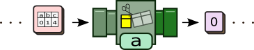
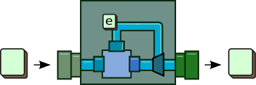

Learn BeepBeep in five minutes
In this quick tutorial, you will learn the basics of ESQL, the Event Stream Query Language that BeepBeep uses to process sequences of data elements called events.
Selecting columns
Suppose you have a system that produced a stream of numerical values and
stored them one after the other in a text file called Values.csv. The file looks like
this:
| a | b | c |
|---|---|---|
| 0 | 1 | 6 |
| 2 | 1 | 2 |
| 8 | 5 | 3 |
| ... | ||
Each line corresponds to an event, which contains values for three parameters, called a, b and c. You want to read this trace of events and get the values for column a.
If this trace were a table where each event is a line, what SQL query would you write to do this? Well, it turns out that the ESQL query you need to write looks very similar:
SELECT a FROM ( THE TUPLES OF FILE "Values.csv" )
This expression actually involves three processors. A
processor takes zero or more event traces as its input, and returns zero or
more event traces as its output. In the previous query, the expression
FILE "Values.csv" corresponds to the input processor, which reads
data from a file and produces an output trace made of the contents of that file,
separated into binary chunks:
The second processor corresponds to the expression THE TUPLES OF.
Its job is to take as input a trace of binary chunks, to interpret these chunks
as the contents of a CSV file, and to create a tuple out of each line:
The third processor corresponds to the SELECT part. For each
tuple it receives as its input, it cuts and combines parts of that tuple to
produce a new tuple as output. In our case, the expression is simply to return
the value of column a directly.

The process of giving the output trace(s) of a processor as the input to another processor is called composition. In our example, the previous expression is the composition, or "piping", of these three processors together, producing a chain of processors:
Computing a sum
The nice thing about processors is that anything can be piped to anything,
as long as the events are of the proper type; for example, it does not make sense
to send the output of the FILE processor directly into
SELECT, as FILE produces binary chunks and
SELECT expects tuples.
This means that we can pipe the output of the previous expression into
something else. For example, we could compute the cumulative sum of all values
of a using the expression COMBINE ... WITH .... The expression
takes as input a trace of events, and an operator that will be used to "combine"
the events of the trace. Graphically, the combiner can be represented as:

The combiner takes an input event, passes it into a function (the blue box) and returns the result. This result is also piped back into the function to be applied with the next event that will come. The combiner needs to be supplied with an initial event e that is used to call the function for the first event it receives.
In our case, the function we need to use is ADDITION, which
implicitly assumes the number 0 as its starting event e when
used in a combiner. The query becomes the following:
COMBINE (
SELECT a FROM (
THE TUPLES OF FILE "Values.csv" ))
WITH ADDITION
Or graphically:

Getting the results
You have probably noticed that the result of our chain of processors is a single pipe that sends out events into the open air. These output events have to go somewhere. We shall now show how you can get a grasp of these events and use them, for example, in your own Java program.
Using JDBC
If you know how to use JDBC to access SQL databases, you can also use it to read the output of an ESQL query. Instead of calling SQL queries to a database server like MySQL, you simply call ESQL queries on BeepBeep.
Class.forName("ca.uqac.lif.cep.jdbc.BeepBeepDriver");
Connection con = java.sql.DriverManager.getConnection("jdbc:beepbeep:","user","password");
Statement stmt = con.createStatement();
ResultSet rs = stmt.executeQuery("SELECT a FROM (THE TUPLES OF FILE 'Values.csv')");
while(rs.next()) {
int sum = rs.getInt();
}
rs.close();
con.close();
In SQL, you use next() and getXXX() to
fetch one more tuple of the result and some element of that tuple, respectively.
In ESQL, you use the same methods to pull the next event of the
result stream, and get some element of that event.
Using native objects
Another way to get the results is to manipulate the result of the query directly.
Interpreter my_int = new Interpreter();
Pullable p = my_int.executeQuery("COMBINE (SELECT a FROM (THE TUPLES OF FILE 'Values.csv')) WITH ADDITION");
while (p.hasNext()) {
int sum = (int) p.next();
}
Notice how pulling the cumulative sum out of a column of an external CSV file has been reduced to a four-liner. As a matter of fact, we claim that BeepBeep is the easiest stream processor around.
If you wish, you can also do without the ESQL syntax, and pipe the processors by yourself:
StreamReader sr = new StreamReader(new FileInputStream(new File("Values.csv")));
TupleFeeder tf = new TupleFeeder();
Select s = new Select(1, "a");
Combiner comb = new Combiner(Addition.class);
Connector.connect(sr, tf, s, comb);
Pullable p = comb.getPullable(0);
while (p.hasNext()) {
int sum = (int) p.next();
}
Through the command line
One last way of doing something with the results is by calling BeepBeep on the command line, and have the result of the query sent to a file. By default, BeepBeep pipes the output of a query to the standard output, which means that you can pipe the results into the standard input of another process by simply writing:
java -jar beepbeep3.jar query.esql | anotherprocess
where query.esql is a text file that contains the query (or set of
queries) to execute.
That's it!
Is it five minutes yet? So far you've learned:
- How BeepBeep uses chains of processors to process streams of events of various types
- How you can write a chain of processors using a simple language called ESQL --which looks a lot like SQL
- How you can easily fetch the results of an ESQL query and use them in your program, in about half a dozen lines of code
You're now ready to learn more about BeepBeep.
- See what processors are available, and how you can use them in ESQL queries
- Create your own processor in a few lines of code, and extend the ESQL grammar to use it in your own queries